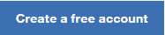

Register your personal IBM Bluemix Trial Account
You can request your free trial account for IBM Bluemix here:

This account provides you the free usage of the runtimes and containers,
and all IBM services for a period of 30 days. At the end of the period
you will be notified and have the choice to decide whether the account
shall be transformed to one of the paid options. Joining a company
account is one of these options.
Please note: we recommend to request the account in advance to
the event. This will avoid a potential waiting time at the first event
day until you receive the account activation confirmation.